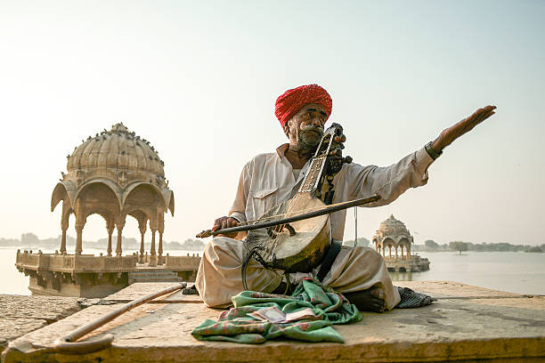

Other Styles
Other Styles of Indian Music fall outside the two major classical systems and represent India's vast cultural diversity. They include folk, tribal, devotional, semi-classical, and popular music traditions.
Folk Music
Traditional music rooted in rural life, festivities, and storytelling. Often passed down orally.
Here are some examples
- Bihu (Assam)-energetic spring festival songs
- Baul (Bengal) - mystical songs by wandering minstrels
- Lavani (Maharashtra)-fast-tempo songs with dance
- Garba/Dandiya (Gujarat) - devotional dance music
- Rajasthani folk- includes Manganiyar and Langa traditions
Tribal Music
Music of India's indigenous communities, often connected to rituals, nature, and community life.
Characteristics
- Use of natural instruments (drums, flutes, seed rattles)
- Strong rhythmic patterns
- Group singing
Examples
- Garo music (Meghalaya)
- Santhali songs (Jharkhand, Odisha, Bengal)
- Gond music (Madhya Pradesh)
Devotional Music (Bhakti & Spiritual Traditions)
Centered around worship and spiritual expression
- Bhajans - Hindu devotional songs
- Kirtan - call-and-response chanting
- Qawwali - Sufi devotional music
- Shabad Kirtan - Sikh hymns
- Abhangs - Marathi bhakti songs
Contemporary/Film Music
- Includes Bollywood, Tollywood, Kollywood, and other film industries.
- Blends classical, folk, Western, and electronic elements.
- Features playback singing and orchestration.
Western-influenced & Fusion Music
- Indian rock, indie, jazz fusion, electronic, world music blends.
- Artists experiment by combining Indian classical or folk with global styles
Images of Various Styles Of Music

FOLK MUSIC
SPIRITUAL MUSIC
BOLLYWOOD MUSIC